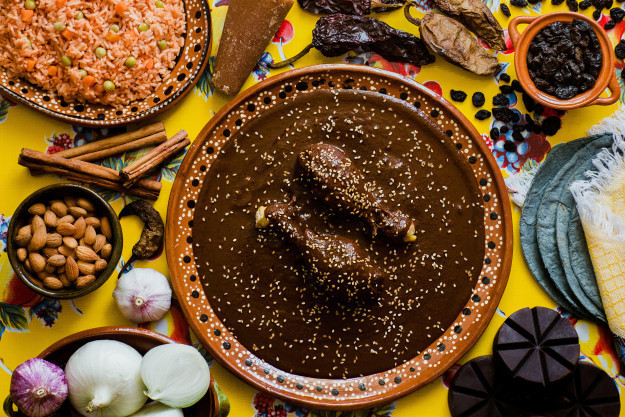
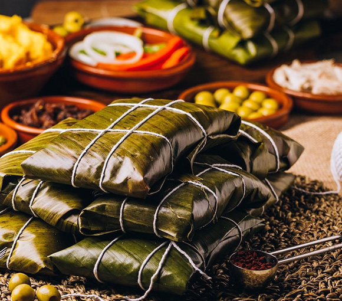
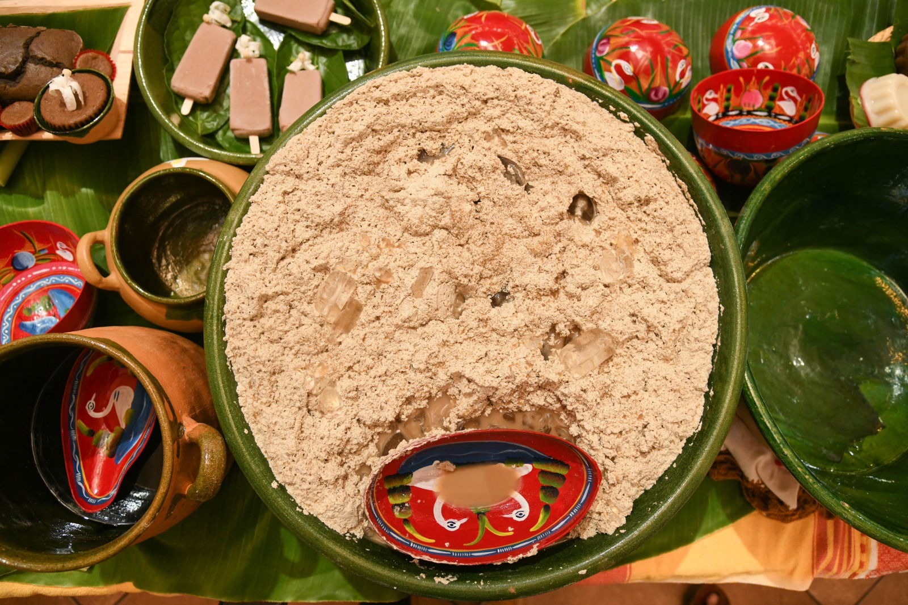
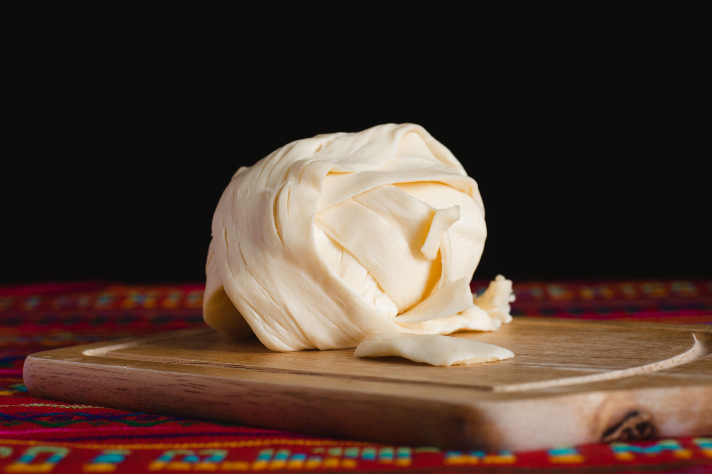
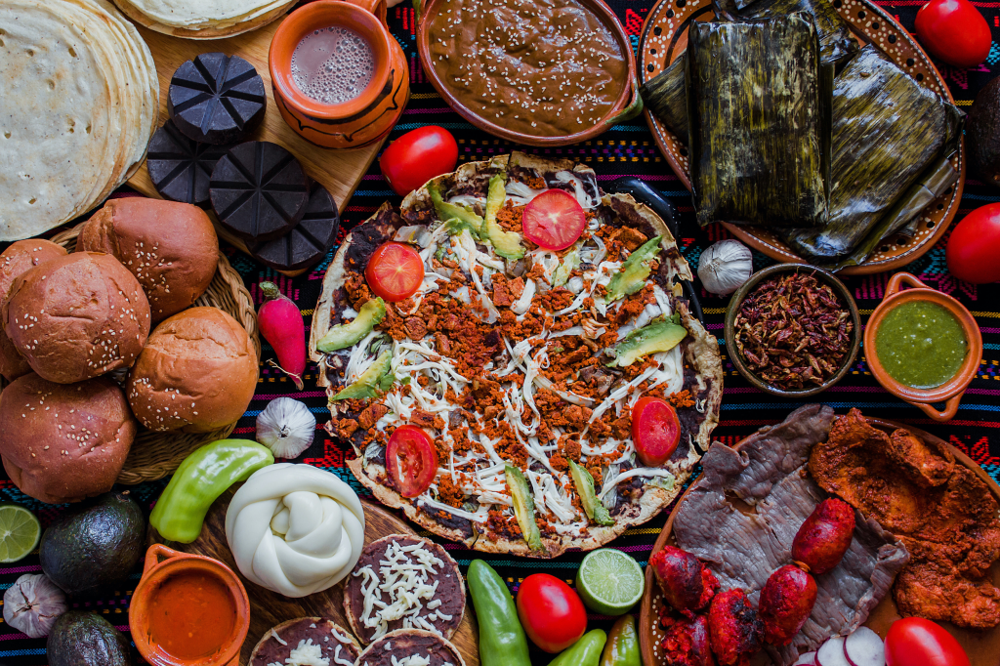

"La gastronomía de Oaxaca es una de las mayores riquezas culturales de México."

La gastronomía oaxaqueña es una de las más representativas de México por su gran variedad de sabores, ingredientes y tradiciones. Se caracteriza por el uso del maíz, los chiles, el cacao, el quesillo, las hierbas aromáticas y otros productos típicos de la región. Gracias a su riqueza culinaria, Oaxaca es reconocida como uno de los principales destinos gastronómicos del país y destaca por sus deliciosos platillos tradicionales que conservan recetas transmitidas de generación en generación.
En la siguiente tabla se muestran algunos de los alimentos más representativos del estado de Oaxaca y sus principales ingredientes.
| Nombre | Imagen | Ingredientes |
|---|---|---|
| Tlayuda |
|
Tortilla grande de maíz, frijoles, quesillo, carne, lechuga, tomate, aguacate y salsa. |
| Mole Negro |
 |
Chiles secos, chocolate, especias, semillas, ajo, cebolla y pollo o guajolote. |
| Tamales Oaxaqueños |
 |
Masa de maíz, mole rojo o negro, pollo o cerdo y hoja de plátano. |
| Tejate |
 |
Maíz tostado, cacao fermentado, hueso de mamey y flor de cacao. |
| Quesillo |
 |
Leche de vaca, cuajo y sal. |
¿Sabías que...?
La cocina oaxaqueña es considerada una de las más importantes del país
gracias a la gran diversidad de ingredientes que posee el estado.
Oaxaca cuenta con los famosos siete moles, además de bebidas
tradicionales como el tejate y el chocolate de agua, preparados con
recetas que han pasado de generación en generación.
"Oaxaca, donde cada platillo cuenta una historia."